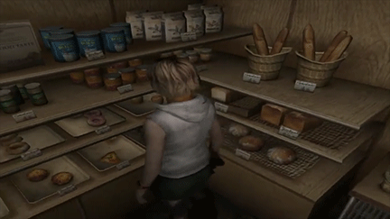

Silent Hill 3
El prólogo del juego es el terrible sueño de la protagonista, Heather Mason, en el que deambula por un abandonado parque de atracciones llamado Lakeside. Al llegar caminando a la montaña rusa trata de bajar por los rieles, pero es empujada por un carro y muere. En ese momento, Heather se despierta.
Ella está en un gran centro comercial justo antes de cerrar. Llama a su padre y le dice que tiene la intención de irse a casa. Un hombre intenta hablarle, presentándose como el detective Douglas Cartland, pero Heather se escapa de él refugiándose en el baño de damas saliendo por una ventana, pero entonces se da cuenta de que su salida fue bloqueada extrañamente y deambula por un centro comercial vacío, sumergiéndose gradualmente en una pesadilla del otro mundo. Aquí, además de los monstruos, el personaje principal conoce a una mujer loca y descalza llamada Claudia, que alude al destino de la protagonista. Afirma que la aparición de monstruos se debe a la voluntad divina y le pide recordar su verdadera naturaleza.
Cuando Heather logra entrar al mundo real, se sitúa en la entrada del centro comercial, donde se encuentra con Douglas nuevamente. Él admite que fue contratado por Claudia para buscarle. Ella no confía en el detective y decide dejarlo solo al entrar al metro, donde vuelve a caer en un mundo diferente. En su camino a casa, pasando por estaciones oscuras de otro mundo, túneles de metro, alcantarillas y edificios de oficinas, Heather conoce a otra persona extraña: un cierto Vincent, que vive constantemente en el mundo de las pesadillas y no experimenta ningún inconveniente. Finalmente, ella logra llegar a su casa donde descubre el cuerpo de su padre, quien fue brutalmente asesinado por orden de Claudia. Después de la reunión entre Heather y Claudia, esta última se va, luego de informar a la chica que el propósito de este asesinato era «llenar el corazón de Heather con venganza y odio». La muchacha lucha contra el misionero que mató a su padre, luego regresa a su departamento, donde se reúne con Douglas otra vez. Allí, Heather lee un diario de su padre en donde se revelan las circunstancias de su nacimiento y las dificultades que tuvo para criarla.
Heather toma la ayuda del detective, y juntos se van en coche a Silent Hill para vengar el asesinato de Harry. Resulta que el padre de la chica es el escritor Harry Mason, el protagonista del primer juego, y ella es la reencarnación de Cheryl Mason y Alessa Gillespie. Claudia, la líder del culto después de la muerte de Dahlia, busca el nacimiento del «Dios» del culto en Heather, ya que es la reencarnación de Alessa.
Robbie el Conejo (Robbie the Rabbit) es un conejo de juguete antropomorfo que aparece en muchos de los juegos de Silent Hill. En algunas de sus apariciones, su boca está cubierta de sangre. En gran medida su aspecto no parece servir para algo más que para proporcionar un nivel de incomodidad ambigua para el jugador, debido a la naturaleza extraña de su existencia en el mundo de Silent Hill, sus colores brillantes en comparación con la apariencia parda y de color rojo oscuro de todo lo demás, y sus apariciones recurrentes.
El personaje de Robbie podría ser visto ya sea como una broma, un homenaje a las diversas películas de terror que muestran conejos ensangrentados como asesinos de pesadilla, o incluso podría ser un elemento del propio pueblo. Una alusión al oscuro sentido del humor de Silent Hill encajaría ya que bastantes subtramas del juego involucran niños del pueblo de una u otra forma. Es posible que simplemente esté ahí como un dispositivo del argumento para unir los juegos de alguna manera ínfima pero memorable.
Nada, literalmente es pan.

La empresa "Konami"
Konami Holdings Corporation (コナミホールディングス株式会社 Konami Hōrudingusu Kabushiki-gaisha?), o simplemente Konami, es una empresa de desarrollo de juguetes, cartas coleccionables, anime, tokusatsu, máquinas tragaperras y videojuegos. Fue fundada en 1969 como un negocio de reparación y de jukeboxes en Osaka, Japón, por Kagemasa Kozuki, quien es todavía su presidente y director ejecutivo.
El nombre "Konami" es una conjunción de los nombres Kagemasa Kozuki, Yoshinobu Nakama, Hiro Matsuda, y Shokichi Ishihara, quienes fueron los socios de Kozuki y los fundadores originales de Konami Industry Co., Ltd en 1973. Konami también significa «olas pequeñas». Tiene actualmente sus bases en Tokio y adicionalmente opera clubes de salud y ejercicio en Japón.
Konami ha sido el responsable de la creación de 6 de las franquicias más exitosas en la historia de los videojuegos: Castlevania, Contra, Metal Gear Solid, Silent Hill, Dance Dance Revolution (que fue el parte aguas para la creación de este tipo de juegos como Pump It Up de Andamiro) y Pro Evolution Soccer (desde su primer videojuego, International Superstar Soccer), así como ser la creadora de videojuegos exitosos, basados en series, caricaturas y películas, tales son los casos de los videojuegos de las caricaturas Tiny Toon Adventures, Animaniacs y Tortugas Ninja, así como el videojuego Batman Returns, basado en la película homónima, y haber desarrollado el considerado mejor videojuego de arcade de todos los tiempos: The Simpsons Arcade Game. Aunado a eso, también ha sido la creadora de la franquicia de cartas coleccionable de Yu-Gi-Oh!, basados en el popular ánime japonés, logrando un gran éxito (y ser la única que le pudo hacer frente al éxito del también juego de cartas Magic: El encuentro).
Pagina oficial de Konami(Games)